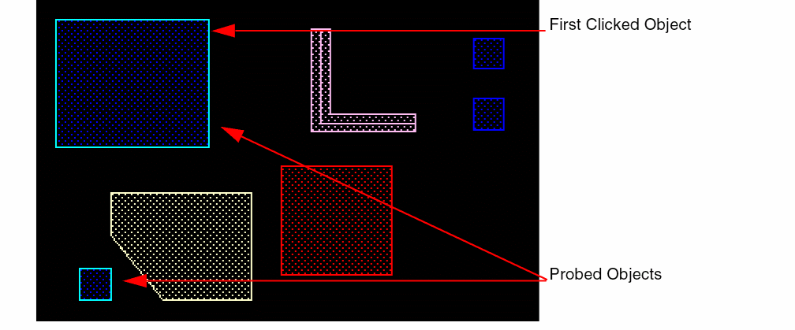
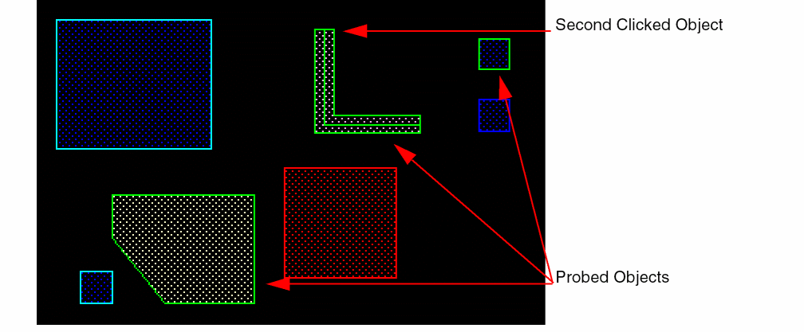

Probing Objects Using Post-Selection Mode
To probe objects using post-selection mode:
-
In the layout window, choose Options – Highlight.
This displays the Highlight Options form. - Select the Flightlines check box.
- Select the object that you want to probe. For example, select Pins to highlight pins on the probed/selected nets.
-
Enter the following SKILL function in the CIW:
geEnterAddNetProbe()
-
In the cellview, click a single object.
Other objects with the same connectivity as the selected object are probed.
In the post-selection mode, objects are probed only when you single-click an object. Objects are not probed if you select multiple objects or use the area selection method.
 -
You can continue to select other objects, one at a time, with a single click. Objects with the same connectivity are probed with the same color. Earlier probed objects are retained.
 -
Press
Escto end the probe command.
Related Topics
Return to top